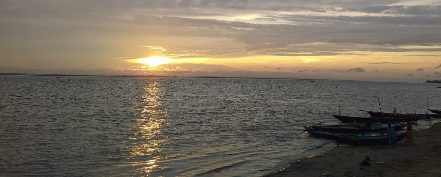
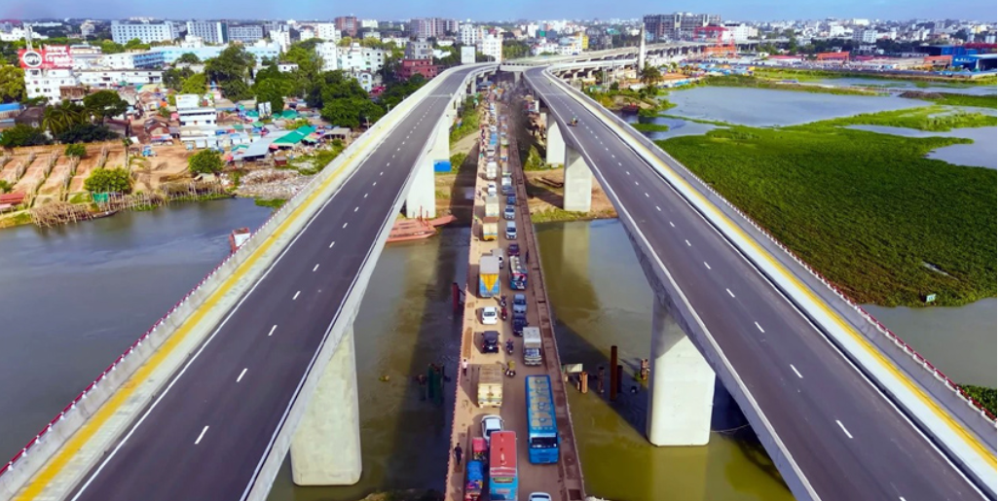

Natural Beauty
Rivers, wetlands, forests, and green fields are important parts of the country's landscape.
Explore SylhetA simple travel website using HTML, CSS, Google Fonts, Flexbox, and Grid.
Bangladesh is a country of rivers, green landscapes, busy cities, beaches, forests, and historic places. Its diverse destinations offer visitors opportunities to experience local culture, food, architecture, and natural beauty in a relatively small geographic area.
From the energetic streets of Dhaka to the long sandy coastline of Cox's Bazar and the tea gardens of Sylhet, every destination has a different character. This website introduces five pages about Bangladesh and demonstrates basic web-development concepts required for the assignment.

Rivers, wetlands, forests, and green fields are important parts of the country's landscape.
Explore Sylhet
Dhaka combines historic neighborhoods, modern buildings, markets, restaurants, and cultural institutions.
Explore Dhaka